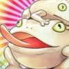

Classificação
Fase Regular
| POS | ICO | DECK | P | RD | V | E | D |
|---|---|---|---|---|---|---|---|
| 1º | Gem-Knight | 0 | 0 | 0 | 0 | 0 | |
| 2º | Magnet | 0 | 0 | 0 | 0 | 0 | |
| 3º | Dino | 0 | 0 | 0 | 0 | 0 | |
| 4º | Gouki | 0 | 0 | 0 | 0 | 0 | |
| 5º | Buster Blader | 0 | 0 | 0 | 0 | 0 | |
| 6º | Blue-Eyes | 0 | 0 | 0 | 0 | 0 | |
| 7º | Cyber Dragon | 0 | 0 | 0 | 0 | 0 | |
| 8º | Cyberdark | 0 | 0 | 0 | 0 | 0 | |
| 9º | Skull Servant | 0 | 0 | 0 | 0 | 0 | |
| 10º | Eldlich | 0 | 0 | 0 | 0 | 0 | |
| 11º |  | Frogs | 0 | 0 | 0 | 0 | 0 |
| 12º | Burn | 0 | 0 | 0 | 0 | 0 |
LEGENDA:
POS = Posição /
ICO = Icone /
Deck /
P = Pontos /
RD = Rodadas Disputadas /
V = Vitórias /
E = Empates /
D = Derrotas